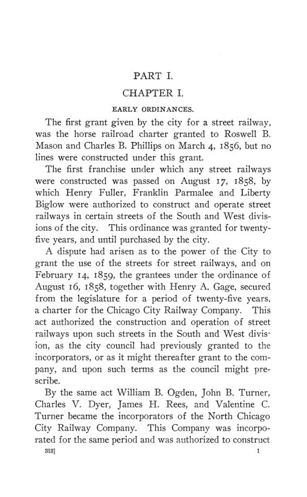

Heilman, 1908: cinquenta anos de concessões dos bondes de Chicago
Leitura: 9 min
Em 1908, R. E. Heilman reconstituiu a briga entre Chicago e suas empresas de bondes: concessões de 99 anos, tarifa de cinco centavos, referendos sobre a municipalização e o acordo de 1907.


Em 1906, a Chicago Union Traction Company pagou à prefeitura US$ 40.257,25 de taxa sobre carros. Se a taxa fosse cobrada, como dizia o nome, a US$ 50 por carro de fato em operação, teria pago US$ 126.150. A diferença vinha de uma regra de 1883: o número de carros tributáveis era o total diário de viagens dividido por 13, na suposição de que cada carro fizesse treze viagens por dia.
O cálculo está em Chicago Traction, de R. E. Heilman, publicado em 1908 como o nº 2 do vol. 9 da terceira série das publicações trimestrais da American Economic Association. A monografia acompanha, em 22 capítulos e dois apêndices, cinquenta anos de relação entre a cidade e as empresas de bondes: as primeiras concessões, as tentativas de obter prazos longos, o movimento pela municipalização, a situação de 1906 e os contratos de 1907. As fontes são atas da câmara municipal, diários da legislatura, decisões judiciais, relatórios de comissões e as contas das próprias empresas.
Quanto tempo durava uma concessão?
A primeira concessão efetivamente usada, de 17 de agosto de 1858, valia por 25 anos e até a compra das linhas pela cidade. Em 6 de fevereiro de 1865, a legislatura de Illinois aprovou, por cima do veto do governador Oglesby, o chamado Ninety-Nine Year Act, que trocava os 25 anos por 99 nas cartas das três companhias. Um protesto contra a lei teve 9.000 assinaturas. Por quatro décadas, a dúvida central foi se o ato prorrogara só a vida das empresas ou também seu direito de usar as ruas.
A reação veio em camadas. A constituição estadual de 1870 passou a exigir o consentimento das autoridades locais para qualquer linha; uma lei de 1874 e a lei municipal de 1875 limitaram as concessões a vinte anos. Em 1883, a câmara preferiu não levar o ato de 1865 aos tribunais: prorrogou todas as concessões por vinte anos, até 1903, em troca da taxa sobre carros. O prefeito Carter Harrison justificou a escolha dizendo que os tribunais da época dificilmente dariam razão à cidade.
Como as empresas tentaram prazos longos?
Heilman descreve três tentativas na legislatura. O projeto Crawford, de 1895, autorizava concessões de 99 anos e foi vetado pelo governador Altgeld.
“Amo Chicago e não estou disposto a ajudar a forjar uma corrente.” (“I love Chicago and am not willing to help forge a chain”)
Os projetos Humphrey, de 1897, prorrogavam todas as concessões por cinquenta anos com tarifa fixa de cinco centavos e criavam uma comissão estadual nomeada pelo governador. Passaram no Senado e caíram na Câmara por 121 a 29. No mesmo ano, a Allen law deu às câmaras municipais o poder de conceder por até cinquenta anos, com tarifa de cinco centavos nos primeiros vinte. A câmara de Chicago não chegou a usá-lo, e a lei foi revogada em 7 de março de 1899, por votação quase unânime.
Por que a municipalização ganhou votos?
Para Heilman, o motor foi o serviço: carros pequenos e velhos, tarifas duplas, congestionamento no centro e superlotação. As empresas abriram os livros a um comitê da Civic Federation; o relatório concluiu que, sem a água do capital, poderiam pagar à cidade 20% da receita bruta, reservar 4% para depreciação e ainda distribuir dividendos de 6%. Em abril de 1902, num referendo consultivo, a municipalização dos bondes venceu por 142.826 votos a 27.998.
A Mueller law, aprovada em 1903, deu às cidades de Illinois o poder de comprar, construir e operar linhas, mas com travas: operar exigia três quintos dos eleitores, e a compra podia ser financiada por certificados pagos só com a renda das próprias linhas. Chicago adotou a lei em abril de 1904, por 153.223 votos a 30.279. Em 1905, Edward F. Dunne foi eleito prefeito com a plataforma da propriedade imediata, e os eleitores rejeitaram o contrato provisório com a Chicago City Railway por 150.785 a 64.381.
No meio do caminho, a Suprema Corte dos Estados Unidos decidiu o caso do ato de 1865, em março de 1906: a lei prorrogou por 99 anos a vida das três companhias, mas não suas concessões nas ruas. Para Heilman, a decisão pôs a cidade numa posição muito melhor para negociar, pois boa parte da rede passou a operar por tolerância da prefeitura.
O que a cidade comprava em 1907?
O ponto de partida era o preço. As empresas pediram US$ 43.119.512 só pela rede da Union Traction, somando bens físicos e o valor das concessões ainda não vencidas. Uma comissão de avaliação, que supôs que a cidade poderia assumir as linhas em dezoito meses, chegou a US$ 46.652.747 para as duas redes, sem o calçamento, ou US$ 50.994.782 com ele. Os contratos aprovados fixaram US$ 29 milhões para o sistema da Union Traction e US$ 21 milhões para a Chicago City Railway.
Os dois contratos, de vinte anos, foram aprovados pela câmara em 4 de fevereiro de 1907, por 56 votos a 13, mantidos sobre o veto de Dunne por 57 a 12 e ratificados em referendo em 2 de abril, por maioria de 33.086 votos. Exigiam a reconstrução da rede em três anos, sob pena de US$ 10.000 por dia; 21 linhas diretas com baldeação entre os sistemas; o fim dos carros em comboio; e um adiantamento de até US$ 5 milhões para um metrô municipal. Uma junta de três engenheiros, com Bion J. Arnold como terceiro membro, aprovaria cada gasto.
A parte financeira é a mais nova. Da receita bruta saíam as despesas de operação e um retorno de 5% sobre o valor fixado mais o investimento em reconstrução; o resto se dividia em 55% para a cidade e 45% para as empresas, com a parte municipal reservada para a compra futura. A cidade podia comprar as linhas com seis meses de aviso, pelo valor fixado mais o custo da reconstrução, com bônus de 20% se não fosse para operá-las ela mesma.
As garantias de serviço valiam no tribunal?
Heilman duvida. Uma lei municipal de 1905 já exigia carros suficientes para levar os passageiros com conforto e sem superlotação; com base nela, a cidade processou a Union Traction em US$ 1.500.000 por 15.000 infrações. Um tribunal de Cook County anulou a regra por imprecisão.
“O conforto pessoal indica um estado de espírito.” (“Personal comfort indicates a state of mind.”)
Os contratos de 1907, nota o autor, usam termos ainda mais vagos, como a promessa de manter a rede na mais alta eficiência praticável. A multa diária por atraso pode ser tratada como penalidade e não ser cobrada; a lei municipal limita multas a US$ 200 por infração; e a cláusula de caducidade quase nunca é aplicada pelos tribunais. Sua conclusão é que as cláusulas, embora pareçam formidáveis, não asseguram o serviço.
“longe de ser garantias blindadas de serviço satisfatório.” (“far from being iron clad guarantees of satisfactory service.”)
Os capítulos finais tratam da fusão provável das duas empresas, que passavam a ser controladas pelos mesmos interesses financeiros, e do futuro da municipalização. Para Heilman, o cidadão comum pouco se importa com quem é o dono das linhas se o serviço for bom; por isso o destino do movimento dependeria do serviço prestado sob os novos contratos.
Na minha leitura
Na minha leitura, a contribuição de método está em ler as concessões como contratos incompletos. Heilman mostra que cada cláusula vaga vira litígio: a taxa por carro que não conta carros, a exigência de conforto que nenhum juiz consegue medir, a multa que pode ser tratada como penalidade. A lição econômica é que o regulador só controla aquilo que consegue verificar. Daí o peso que o contrato de 1907 dá à junta de engenheiros e ao padrão contábil uniforme, que transformam promessas em números auditáveis.
O segundo ponto, na minha leitura, é a divisão da receita líquida. A cidade aceitou dividir um resíduo que depende de custos informados pelas próprias empresas, e a conta de Heilman mostra que esse resíduo podia não existir com os custos da época. Uma parcela da receita bruta é menos elegante, mas muito mais fácil de fiscalizar. A escolha entre as duas fórmulas é, no fundo, uma escolha sobre quanta informação o poder público consegue de fato obter.
Glossário
- Traction
- no inglês americano da época, o transporte urbano sobre trilhos: bondes a cavalo, a cabo e elétricos.
- Concessão (franchise)
- direito, dado pela cidade ou pelo estado, de usar as ruas para operar uma linha.
- Capital aguado (watered stock)
- ações e títulos emitidos acima do valor dos bens da empresa.
- Municipalização (municipal ownership)
- propriedade das linhas pela cidade, com operação própria ou arrendada.
- Certificados de bonde (street railway certificates)
- títulos pagos só com a renda das linhas compradas, sem garantia do caixa geral da cidade.
- Desapropriação (condemnation)
- aquisição compulsória de bens privados pelo poder público, mediante indenização.
- Danos prefixados (liquidated damages)
- valor de indenização fixado de antemão no contrato para cada dia de descumprimento.
- Caducidade (forfeiture)
- perda da concessão por descumprimento grave do contrato.
Fontes
- Chicago Traction (pp. 1–131). JSTOR · Internet Archive (PDF)
- Sumário da edição no JSTOR: American Economic Association Quarterly, 3ª série, vol. 9, nº 2.
Documento em domínio público (EUA, publicado antes de 1931), via JSTOR Early Journal Content e Internet Archive. Resumo e comentário do autor deste site, sem afiliação com a American Economic Association. Encontrou um erro? Escreva: a correção é publicada no próprio texto, com data.
← Nº 89 · O Economic Bulletin estreia: notas, resenhas e bibliografia Nº 91 · O segundo Bulletin: greenbacks, orçamentos operários e coleções →